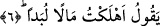

5. İnsan, hiç kimsenin kendisine güç yetiremeyeceğini mi sanıyor?
Buradaki zamir Velid b. Muğîre ve benzeri Hz. Peygamber (s.a.)’in en çok sıkıntı
çektiği Kureyş’in ileri gelen bazı kâfirleri hakkında kullanılmıştır.
Yani o işin ve durumun hiç kimsenin kendisinden intikam almaya gücünün yetmeyeceği
şeklinde olduğunu mu sanıyor. Onun bu mahrumiyetten/perdesinin kalınlığından ve kalp
hastalığından kaynaklanan zannı geçersizdir. Çünkü bir olan Allah ondan intikam almaya
kadirdir. O azîzdir ve intikam sâhibidir.
6. “Pek çok mal harcadım” diyor.
Bu çürük zannı besleyen kişi saçma bir düşünceyle ve kibirle “pek çok mal
harcadım” diyor.
Bu sözüyle o başkalarına işittirmek ve öğünmek için çok mal harcadığını ifâde etmek
istiyordu. Cahiliye devri insanları bunun gibi harcamaları “cömertlik/kerem” diye
adlandırır, şeref ve iftihar vesilesi olduğunu iddiâ ederlerdi.
Âyette “helâk ettim/tükettim” ifâdesinin kullanılmış olması harcanan malın aslında
boşa gittiğine işâret etmek içindir. Çünkü bu malın âhirette sâhibine faydası
olmayacaktır. Nitekim Hz. Âişe (r.anhâ) amcasının oğlu Abdullah b. Cüd‘ân hakkında
“O Câhiliyye devrinde sıla-i rahimde bulunur, fakirleri yedirirdi. Acaba bu yaptıkları
kendisine fayda verecek mi, yâ Rasûlallah?” diye sordu. Hz. Peygamber (s.a.): “Hayır,
Çünkü o hiç bir gün ‘Rabbim hesab günü hatalarımı bağışla’ dememiştir.” buyurdu.
[102]
7. Kimse onu görmedi mi sanıyor?
Bu kendi kendine öğünen ahmak kişi mal harcarken “kimse onu görmedi mi
sanıyor?” Allah Teâlâ’nın kendisine bunun hesabını sormayacağını ve yaptığının
karşılığını vermeyeceğini mi sanıyor? Yani Allah onu görmüş, niyetinin kötülüğüne ve
içinin fesatla dolu olduğuna muttali olmuştur. Buna göre de yaptığının karşılığını
verecektir. Böyle bir harcama övünmek için olduğundan rezîlettir. O câhil onu nasıl
fazîlet sayar? Bir hadîste şöyle buyrulmuştur: “Kıyamet günü dört şeyden
sorulmadıkça kulun iki ayağı yerinden kıpırdayamaz: Ömrünü nerede tükettiğinden,